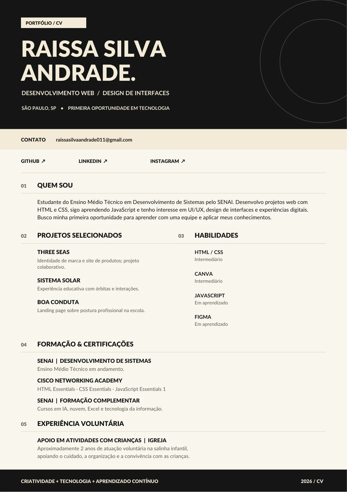

06 · currículo / 2026
PORTFÓLIO × CARREIRA
MINHA
trajetória.
Desenvolvimento web, design de interfaces e vontade de transformar ideias em experiências digitais.
1 página · PDF com links clicáveis · São Paulo, SP

Para conhecer meu trabalho
Além do papel.
O currículo apresenta minha trajetória em uma página. Aqui no portfólio, você pode explorar os projetos e certificações com mais detalhes.